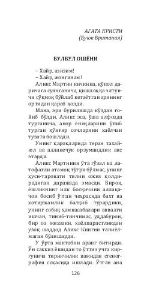

BOTinch hayot kechirayotgan ayolning sirli tushlari va o'tmishdagi tanlovlari haqidagi detektiv hikoya.
Agata Kristining ushbu asarida qishloqdagi «Bulbul oshyoni» nomli uyda yashovchi Аликс Мартин ismli ayolning sirli kechinmalari va o'tmishdagi tanlovlari haqida hikoya qilinadi. Eri uydan ketganidan so'ng uning hayotida kutilmagan bezovtaliklar va qo'rqinchli tushlar boshlanadi. Asar inson ruhiyati, muhabbat va shubhali voqealarni o'z ichiga oladi.